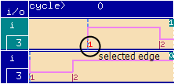

Selecting Edges
In order to use an edge for some activity, you have to select it. Having scrolled to the edge you wish to use, select it by clicking its number in the unused edge box. Start with edge 1 and move up.
Selecting an edge means:
- "running it out" of the unused edge box. This enables an unused edge to be used in a device cycle. The system positions the edge at delay 0.0 ns in each test system cycle and displays it in red to tell you it is available for waveform creation.
- making a used edge available for waveform creation. If an edge is already positioned
somewhere in a test system cycle, just click it with the mouse. The system highlights it in red.
